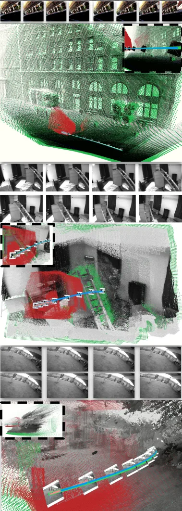
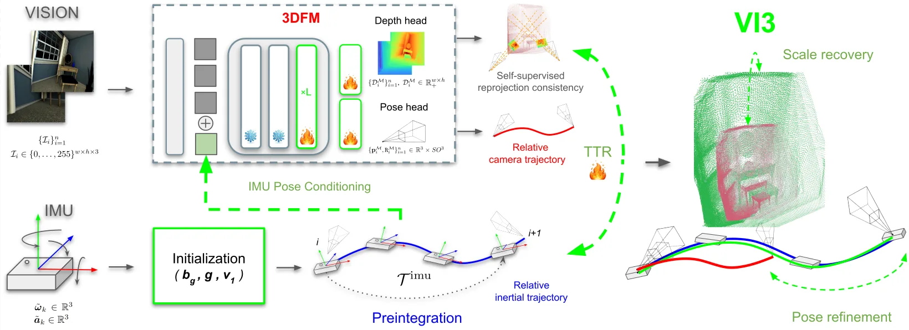
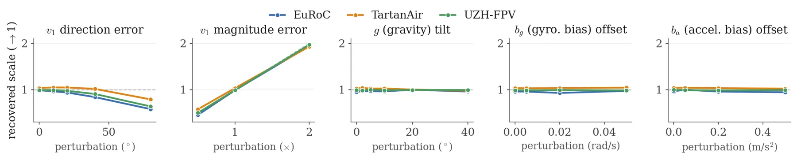
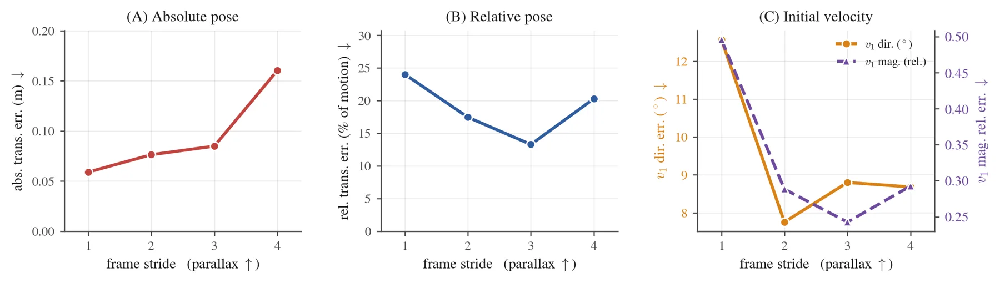
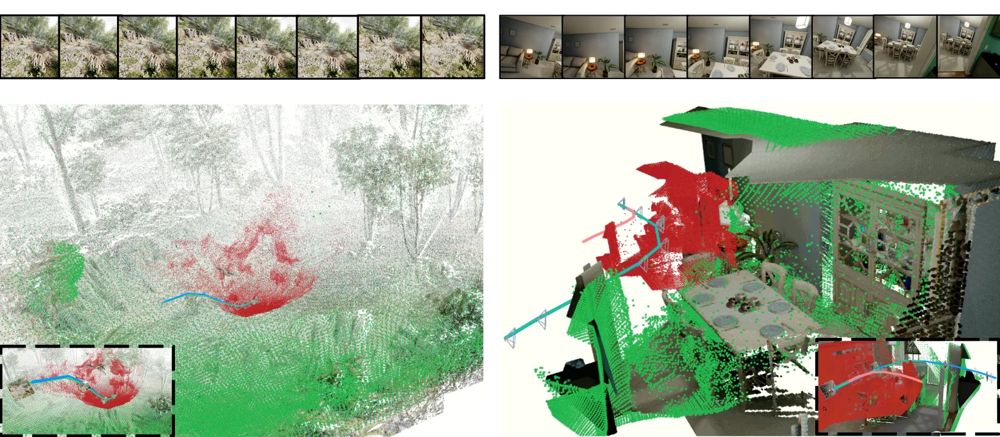
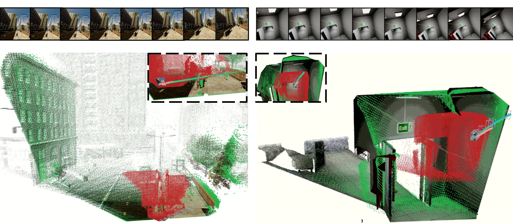

VI3：用惯性线索锚定预训练 3D 几何基础模型
VI3: Grounding Pretrained 3D Foundation Models with Inertial Cues
这是一条从几何基础模型到可靠状态估计的直接融合路径：保留 3DFM 的强相对几何先验，再用 IMU 补足单目不可观测的尺度。重点风险是运动激励、IMU 偏置和测试时优化的稳定性。
作者、单位与技术谱系 · Research context
作者与单位
研究脉络
- DUSt3R/VGGT 等 3DFM方法基座关系：继承前馈多视图几何与相对位姿先验[论文引言与相关工作]
- IMU preintegration 与视觉惯性估计方法上游关系：引入有尺度运动、重力和偏置状态作为物理参考[官方 HTML §4]
- VI3 metric anchoring本篇推进关系：将 IMU 物理尺度接入预训练 3DFM 而不依赖 ground truth scale[官方 HTML §5–6]
作者、谱系和网络条目仅采用论文署名、相关工作、公式和官方项目链接；未发现公开合作边时不作导师或师生推断。
方法本质拆解 · What actually changed
训练
VI3 的核心流程使用预训练 3DFM，论文主方法不是重新训练几何 backbone。它在推理阶段利用 IMU 初始化和可选 TTR；具体是否对某些轻量模块进行训练，以及训练数据细节，需按正文 implementation section 继续核验。
约束
新增先验是 IMU 预积分得到的有尺度 ΔR、Δv、Δp，以及重力幅值 9.81 m/s²。尺度锚定把这些物理量与 3DFM 的 up-to-scale 运动连接，约束作用在尺度、初速度、重力和相关状态变量上。
推理
推理时先读取图像和 IMU，完成惯性状态初始化，再把尺度参考用于 3DFM 输出锚定，并可进行 TTR。该流程不是传统全局 BA 的替代声明；它更接近面向 3DFM 输出的轻量状态一致性 refinement。
机制
VI3 改变的是几何基础模型输出的尺度可辨识性：视觉模型提供强相对几何，IMU 提供物理尺度和运动增量。两者通过初始化与锚定连接后，尺度不再完全由单目视觉猜测，但错误惯性先验会把系统推向错误的米制解。
输入图像、3DFM 相对几何和 IMU 预积分，改变尺度锚定位置并以物理运动约束修正输出，从而得到 metric reconstruction。

动机与问题Motivation
动机与问题
3DFM 能从多视图预测相机位姿和稠密深度，却通常只确定到未知尺度；单目图像本身无法提供绝对米制尺度。VI3 要解决的是如何只用常见设备上的 IMU，把尺度和运动物理量注入已有模型，同时不破坏其相对几何一致性。
方法Method
方法总览
方法先对 IMU 做旋转、速度和位置预积分，并估计陀螺偏置、初速度和重力方向。随后把惯性运动增量与 3DFM 的 up-to-scale 输出建立尺度、旋转和状态锚定关系，最后可用 test-time refinement 进一步调整模型输出。
关键技术细节
惯性初始化使用跨帧旋转与加速度积分构造 ΔR、Δv 和 Δp，并以平均加速度方向估计重力，随后用速度增量求尺度。尺度锚定通过带扰动变量的最小二乘关系完成，正文还区分 up-to-scale 模型只做 TTR 与 metric 模型同时做输入 conditioning 和 TTR。

实验Experiments
实验设置
实验包含合成数据和真实 aerial 数据，并比较无惯性 3DFM、不同惯性初始化、输入 conditioning 与 test-time refinement。指标包括尺度/轨迹相关误差以及深度和几何一致性；官方 HTML 明确报告了 Table 8–9 的 ground-truth inertial initialization 对照，但完整数据集名称和所有数值以 source.md 的实验表为准。
实验数字与比较
官方 HTML 的惯性公式固定重力幅值为 9.81 m/s²，这是尺度锚定的物理先验而非学习参数。正文补充实验把 GT-free initialization 与 ground-truth inertial parameters 对照，并分开评估 up-to-scale 的 TTR 以及 metric 模型的 conditioning+TTR；具体表格数值待从原文表格逐项核验。
消融/失败边界
去掉惯性初始化会使尺度估计失去物理运动参考，去掉 TTR 则无法利用测试序列中的一致性继续修正；官方补充材料明确把这两项作为 ablation。失败边界包括低激励或近退化运动、IMU bias/噪声过大、初始速度或重力估计错误，以及 3DFM 相对位姿本身不可靠。
局限与迁移Limitations & Transfer
局限与待核验
作者明确承认 3DFM 的无尺度性质是问题来源，并把性能依赖惯性初始化和测试时 refinement；论文没有证明在任意传感器噪声或长时间漂移下都稳定。待核验项是各 aerial 数据集规模、完整轨迹误差数字、TTR 迭代开销，以及内参与 IMU 时间偏移对锚定的影响。
与你研究路线的关系
可迁移模块是把 3DFM 的 dense point/depth prior 作为观测，把 IMU 预积分作为物理约束，再在局部状态变量上做尺度与偏置一致性检查。下一步应在同一数据上注入 IMU dropout、bias jump 和低激励片段，比较无 refinement、局部优化和 uncertainty-weighted anchoring 的恢复率与可观测性。
{kind=link}

{kind=link}

{kind=link}

{kind=link}
